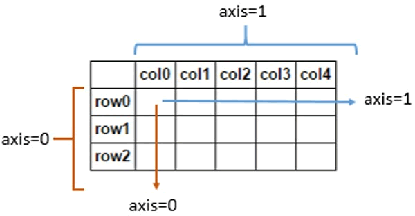
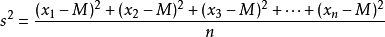

NumPy统计函数
NumPy 提供了许多统计功能的函数，比如查找数组元素的最值、百分位数、方差以及标准差等。
对于二维数组来说，axis=1 表示沿着水平方向，axis=0 表示沿着垂直方向。
示例如下：
numpy.average() 根据在数组中给出的权重，计算数组元素的加权平均值。该函数可以接受一个轴参数 axis，如果未指定，则数组被展开为一维数组。
下面举一个简单的示例：现有数组 [1,2,3,4] 和相应的权重数组 [4,3,2,1]，它的加权平均值计算如下：
numpy.amin() 和 numpy.amax()
这两个函数用于计算数组沿指定轴的最小值与最大值：- amin() 沿指定的轴，查找数组中元素的最小值，并以数组形式返回；
- amax() 沿指定的轴，查找数组中元素的最大值，并以数组形式返回。
对于二维数组来说，axis=1 表示沿着水平方向，axis=0 表示沿着垂直方向。

图1：axis轴
示例如下：图1：axis轴
import numpy as np
a = np.array([[3,7,5],[8,4,3],[2,4,9]])
print ('数组a是：')
print(a)
#amin()函数
print (np.amin(a))
#调用 amin() 函数，axis=1
print(np.amin(a,1))
#调用amax()函数
print(np.amax(a))
#再次调用amax()函数
print(np.amax(a,axis=0))
输出结果如下所示：我们的数组是： [[3 7 5] [8 4 3] [2 4 9]] 调用amin()函数： 2 调用 amin(axis=1) 函数： [3 3 2] amax() 函数： 9 amax(axis=0) 函数： [8 7 9]
numpy.ptp()
numpy.ptp() 用于计算数组元素中最值之差值，也就是（最大值 - 最小值）。
import numpy as np
a = np.array([[2,10,20],[80,43,31],[22,43,10]])
print("原数组",a)
print("沿着axis 1:",np.ptp(a,1))
print("沿着axis 0:",np.ptp(a,0))
输出结果：
原数组 array: [[ 2 10 20] [80 43 31] [22 43 10]] 沿着 axis 1: [18 49 33] 沿着 axis 0: [78 33 21]
numpy.percentile()
百分位数，是统计学中使用的一种度量单位。该函数表示沿指定轴，计算数组中任意百分比分位数，语法格式如下：numpy.percentile(a, q, axis)
函数 numpy.percentile() 的参数说明：- a：输入数组；
- q：要计算的百分位数，在 0~100 之间；
- axis：沿着指定的轴计算百分位数。
示例如下：
import numpy as np
a = np.array([[2,10,20],[80,43,31],[22,43,10]])
print("数组a:",a)
print("沿着axis=0计算百分位数",np.percentile(a,10,0))
print("沿着axis=1计算百分位数",np.percentile(a,10,1))
输出结果：
数组a: [[ 2 10 20] [80 43 31] [22 43 10]] 沿着axis=0计算百分位数： [ 6. 16.6 12. ] 沿着axis=1计算百分位数： [ 3.6 33.4 12.4]
numpy.median()
numpy.median() 用于计算 a 数组元素的中位数（中值）：import numpy as np a = np.array([[30,65,70],[80,95,10],[50,90,60]]) #数组a: print(a) #median() print np.median(a) #axis 0 print np.median(a, axis = 0) #axis 1: print(np.median(a, axis = 1))输出结果如下：
数组a: [[30 65 70] [80 95 10] [50 90 60]] 调用median()函数: 65.0 median(axis=0): [ 50. 90. 60.] median(axis=1): [ 65. 80. 60.]
numpy.mean()
该函数表示沿指定的轴，计算数组中元素的算术平均值（即元素之总和除以元素数量）。示例如下：
import numpy as np
a = np.array([[1,2,3],[3,4,5],[4,5,6]])
print ('我们的数组是：')
print (a)
print ('调用 mean() 函数：')
print (np.mean(a))
print ('沿轴 0 调用 mean() 函数：')
print (np.mean(a, axis = 0))
print ('沿轴 1 调用 mean() 函数：')
print (np.mean(a, axis = 1))
输出结果：
我们的数组是： [[1 2 3] [3 4 5] [4 5 6]] 调用 mean() 函数： 3.6666666666666665 沿轴 0 调用 mean() 函数： [2.66666667 3.66666667 4.66666667] 沿轴 1 调用 mean() 函数： [2. 4. 5.]
numpy.average()
加权平均值是将数组中各数值乘以相应的权数，然后再对权重值求总和，最后以权重的总和除以总的单位数（即因子个数）。numpy.average() 根据在数组中给出的权重，计算数组元素的加权平均值。该函数可以接受一个轴参数 axis，如果未指定，则数组被展开为一维数组。
下面举一个简单的示例：现有数组 [1,2,3,4] 和相应的权重数组 [4,3,2,1]，它的加权平均值计算如下：
加权平均值=（1 * 4 + 2 * 3 + 3 * 2 + 4 * 1）/（4 + 3 + 2 + 1）
使用 average() 计算加权平均值，代码如下：
import numpy as np
a = np.array([1,2,3,4])
print('a数组是：')
print(a)
#average()函数：
print (np.average(a))
# 若不指定权重相当于对数组求均值
we = np.array([4,3,2,1])
#调用 average() 函数：')
print(np.average(a,weights = we))
#returned 为Ture，则返回权重的和
prin(np.average([1,2,3,4],weights = [4,3,2,1], returned = True))
输出结果：
a数组是： [1 2 3 4] 无权重值时average()函数： 2.5 有权重值时average()函数： 2.0 元组(加权平均值,权重的和)： (2.0, 10.0)在多维数组中，您也可以指定 axis 轴参数。示例如下：
import numpy as np a = np.arange(6).reshape(3,2) #多维数组a print (a) #修改后数组 wt = np.array([3,5]) print (np.average(a, axis = 1, weights = wt)) #修改后数组 print (np.average(a, axis = 1, weights = wt, returned = True))输出结果为：
多维数组a： [[0 1] [2 3] [4 5]] axis=1按水平方向计算： [0.625 2.625 4.625] 修改后的数组： (array([0.625, 2.625, 4.625]), array([8., 8., 8.]))
方差np.var()
方差，在统计学中也称样本方差，如何求得方差呢？首先我们要知道全体样本的的平均值，然后再求得每个样本值与均值之差的平方和，最后对差的平方和求均值，公式如下（其中 n 代表元素个数）：

图1：方差公式
示例如下：图1：方差公式
import numpy as np print (np.var([1,2,3,4]))输出结果：
1.25
标准差np.std()
标准差是方差的算术平方根，用来描述一组数据平均值的分散程度。若一组数据的标准差较大，说明大部分的数值和其平均值之间差异较大；若标准差较小，则代表这组数值比较接近平均值。它的公式如下：std = sqrt(mean((x - x.mean())**2
NumPy 中使用 np.std() 计算标准差。示例如下：import numpy as np print (np.std([1,2,3,4]))输出结果：
1.1180339887498949
关注公众号「站长严长生」，在手机上阅读所有教程，随时随地都能学习。内含一款搜索神器，免费下载全网书籍和视频。

微信扫码关注公众号